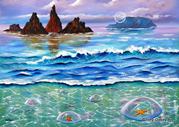
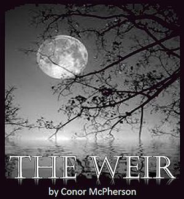
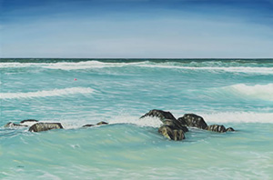

Our Suppliers and Artistic Services at the Tudor Artisan Hub, Carrick-on-Suir
Emer Screamer, Handmade Cards for all occasions.Camphill, Carrick-on-Suir, Hand crafted items made locally.
Tony Oakey, local Artist.
Brewery Lane Theatre, Carrick-on-Suir. The Hub provides ticket sales, promotion and advertising for
Brewery Lane.Away with the Fairies, Irish made hand crafted items.
Teresa Moran, local Artist.